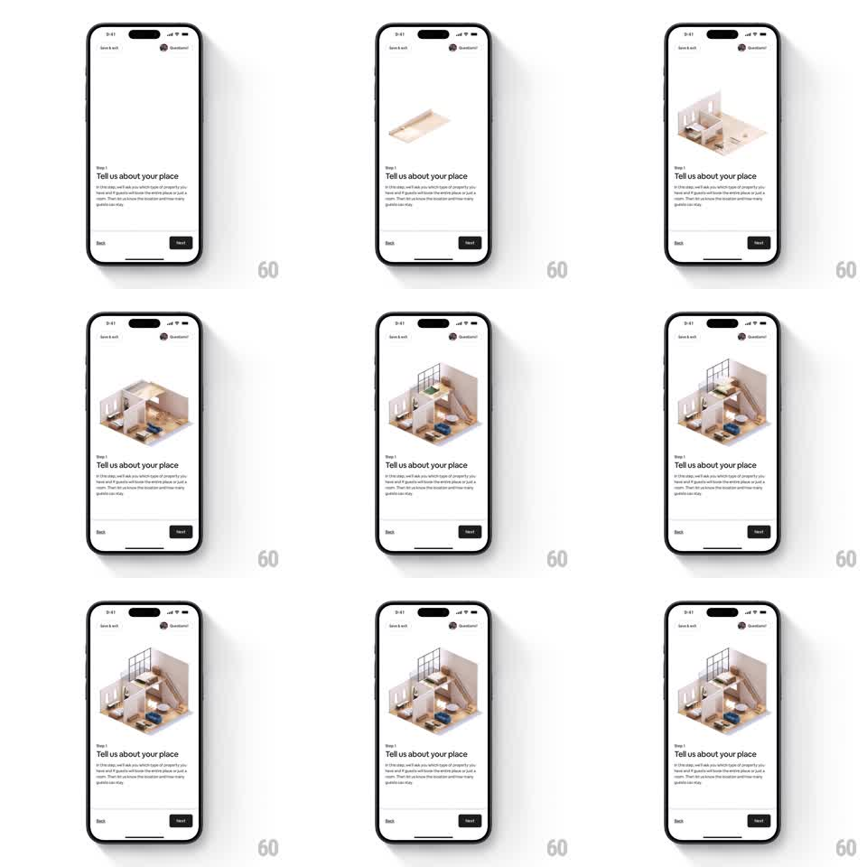

Media
Frame-by-frame

Rebuild this animation 1:1: Airbnb host onboarding step 1 ("Tell us about your place") - an isometric 3D house assembles from nothing: floor slab slides in, walls rise, the staircase and upper floor stack on, roof rails and furniture pop into place, staggered like a model building itself.

Rebuild this animation 1:1: Airbnb host onboarding step 1 ("Tell us about your place") - an isometric 3D house assembles from nothing: floor slab slides in, walls rise, the staircase and upper floor stack on, roof rails and furniture pop into place, staggered like a model building itself.
## Integration
Integration: stack-agnostic spec - springs given as stiffness/damping, timed motions as duration + curve; map every value to your framework and animation library of choice.
## Scene
Onboarding layout (illustration top, Step 1 + headline + copy, Back / Next footer). The illustration stage starts empty and ends as the full open cutaway: two floors, staircase, railings, furniture, plants.
## Motion spec
Pattern: one-shot assembly sequence, ~3s total.
- Floor slab: slides in from the left and drops flat (translateX -120 -> 0 with rotate, 500ms, ease-out).
- Ground-floor walls: rise from the slab edges (scaleY 0 -> 1 from floor anchor, 400ms, 100ms stagger).
- Upper floor + staircase: stack down from above (translateY -40 -> 0, 350ms, ease-out, overlapping the wall finish by 100ms).
- Railings + furniture: pop in room by room (scale 0.6 -> 1 with spring ~280/20, 70ms stagger, back rooms first).
- Plants last: small scale-pop with the same spring, offset so they land as the final beat.
- Loop: after assembly completes, hold ~2s, then the sequence can restart for an ambient loop (or hold static if the screen exits on tap).
## Calibration
- Every element enters along the axis it would physically assemble on - walls rise, floors drop, furniture pops.
- The 70ms stagger cadence is metronomic; randomize order, not interval.
## Reduced motion
Cut to the assembled house, 300ms fade.
## Don't miss
- Nothing floats: every piece ends in contact with the structure.
- Stairs arrive with the upper floor as one unit.